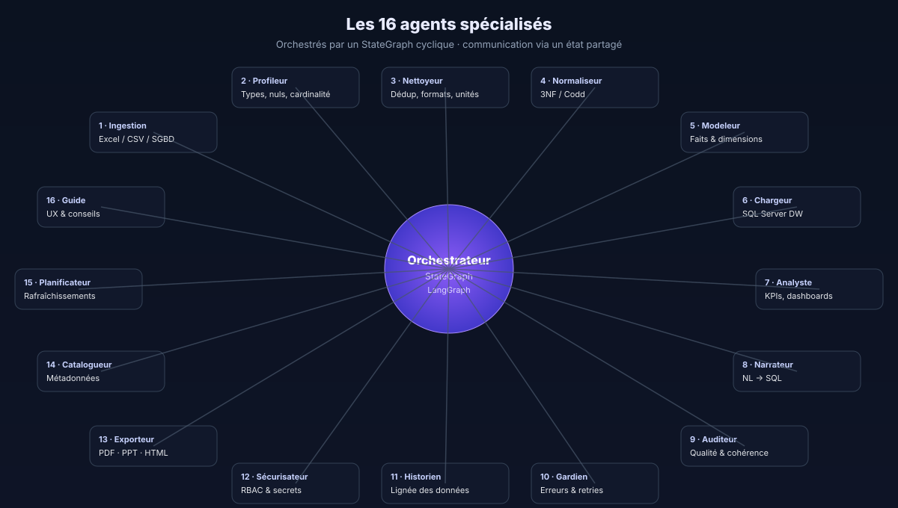

Les 16 agents spécialisés
Un agent = un rôle métier clair, un prompt maîtrisé, un contrat d'entrée/sortie typé. En équipe, ils couvrent l'intégralité du cycle source → data warehouse → BI.

Principes de conception
- Un rôle = un prompt. Chaque agent a son propre fichier de prompt, versionné, testé par des évaluations.
- Communication par état. Les agents ne se parlent pas directement : ils lisent et écrivent dans le
Stateglobal. - Déterminisme contrôlé. Les décisions critiques (ex. clés primaires) sont prises via code ; le LLM propose, le code tranche.
- Budget cognitif. Chaque agent a un quota de tokens — s'il est dépassé, l'Auditeur déclenche un mode dégradé.
Catalogue des agents
Ingestion
Détecte le format (xlsx, csv, JDBC), lit avec le bon parseur, infère l'encodage, construit un DataFrame canonique.
Profileur
Calcule types, distributions, cardinalités, ratios de nuls et repère les colonnes candidates à devenir clés ou mesures.
Nettoyeur
Harmonise les formats (dates, nombres, unités), déduplique, comble les nuls via règles ou suggestions LLM.
Normaliseur
Porte le dataset en 3e forme normale (Codd). Identifie les dépendances fonctionnelles et éclate les tables.
Modeleur
Transforme le 3NF en schéma en étoile : identifie faits et dimensions, détecte les hiérarchies (SCD Type 2).
Chargeur
Exécute les DDL, charge les dimensions (MERGE), puis les faits (INSERT en lot) sur SQL Server.
Analyste
Propose des KPIs pertinents à partir du domaine, construit les requêtes et alimente le tableau de bord.
Narrateur NL→SQL
Reçoit une question en français (« Top 5 produits par marge sur 2025 ») et produit un SQL valide + graphe.
Auditeur
Vérifie la qualité à chaque étape (complétude, cohérence, respect des contraintes) et peut déclencher un retour en arrière.
Gardien
Intercepte les exceptions, orchestre les retries exponentiels, bascule vers un plan dégradé si besoin.
Historien
Trace la lignée des données (colonne source ↔ colonne cible) et conserve une trace auditable des transformations.
Sécurisateur
Applique les RBAC, masque les colonnes sensibles (PII), signe les artefacts exportés.
Exporteur
Génère PDF / PowerPoint / HTML / Excel / Power BI à partir de l'étoile et des KPIs sélectionnés.
Catalogueur
Alimente un catalogue de métadonnées (dictionnaire de données) consommable par les équipes BI.
Planificateur
Organise les rafraîchissements futurs : fréquence, fenêtre, dépendances, notifications.
Guide UX
Fournit des explications contextuelles à l'utilisateur (tooltips, infobulles) et propose les bonnes actions suivantes.
Exécution : l'Orchestrateur
L'orchestrateur n'est pas un agent — c'est le chef d'orchestre. Il maintient l'état, décide de l'ordre, arbitre les conflits entre agents. Son graphe est cyclique : un pipeline normal suit 1 → 2 → … → 13, mais l'Auditeur peut renvoyer à 3 ou 5 si la qualité est insuffisante.
wf = StateGraph(PipelineState)
wf.add_node("ingestion", ingestion_agent)
wf.add_node("profiler", profiler_agent)
# …
wf.add_conditional_edges(
"auditor",
lambda s: "cleaner" if s["quality"] < 0.85 else "modeler",
{"cleaner": "cleaner", "modeler": "modeler"},
)api/agents/*/prompt.txt. Ils sont courts, explicites et testés par des évaluations eval_*.py (régression prompts).